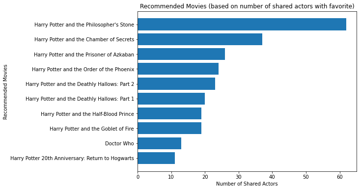

Webscraping with Scrapy: Movie Recommendations Based on Featured Actors
PIC16B: Homework 2
homework
Author
Kenny Guo
Published
February 8, 2025
Hello lovely reader! In this tutorial/assignment, we’ll be using the Scrapy Python library to webscrape The Movie Database (https://www.themoviedb.org/?language=en-US) in an attempt to get some show/movie recommendations depending on your favorite movie. Our idea is simple: if a movie has a bunch of the same actors as your favorite movie, it is likely a good recommendation.
Webscraping Actors and Movies
We’ll get started by installing scrapy, then running in your terminal:
scrapy startproject TMDB_scraper
This will create a directory equipped with a bunch of machinery for running “spiders” which will crawl around the webpages’ HTML code and parse it as we please. First, we’ll navigate to the /spiders folder, and create a new .py file called tmdb_spider.py. This is where we will code our spider.
The gameplan to make for our spider follows three steps: 1. Start on the movie’s webpage and navigate to its “Full Cast and Crew” page 2. Navigate to all the actors webpages on the cast page 3. Scrape the movies each actor was in and fill in the results in a CSV file
We’ll begin by importing scrapy and other important things like Spider and Request. To create our spider, we’ll define a TmdbSpider class that inherits from scrapy.Spider, so it is equipped with useful scrapy machinery.
Then, we need to provide our spider a unique name. We’ll also define an initializer, so when we run our spider, we can provide in an argument for the subdirectory/favorite movie page we want our spider to start on. This will add the page url to start_urls, which will indicate for the spider to begin scraping this one first.
from scrapy.spiders import Spiderfrom scrapy.http import Requestimport scrapyclass TmdbSpider(scrapy.Spider):# Unique name! name ='tmdb_spider'# Provide your favorite movie's subdirectorydef__init__(self, subdir="", *args, **kwargs):self.start_urls = [f"https://www.themoviedb.org/movie/{subdir}/"]
Alright, so our spider is going to start with some movie page, but we also need to define a parse function which our spider will execute first on start_urls. Since the full cast and crew webpage can be found by simply appending /cast to the end of the url, we’ll do that.
From there, we’ll send in a GET request using Request() to that new url, which will return another response object for us to parse. The function provided in the callback argument, parse_full_credits, instructs the spider how to parse this new response. We’ll define that next.
def parse(self, response):''' Assumes spider starts on a movie webpage, navigates to the "Full Cast & Crew" page, then runs parse_full_credits. ''' cast_url = response.url +'/cast'yield Request(cast_url, callback =self.parse_full_credits)
Ok, now our spider is on the full_cast and crew page. It needs to find all the links to the actors pages from the html in response.body. Some digging around on the html code for these webpages reveals that the people links can be found under ol tags with class="people_credits". But these tags include lists for actors, crew members, production, etc., so to just get the list of actors, we’ll index out the first list.
From there, we’ll parse the html further by finding all a tags embedded in p tags within the frist ol.people.credits tag (for actors), which contain the hyperlinks to the actors webpages. For each one, we’ll get the href attribute, and join it with the base url https://www.themoviedb.org/ which will give us the full url for the actor’s webpage.
Then, following the gameplan, we’ll then send another GET request to each one of the actor’s pages, and pass in parse_actor_page to tell our spider how to parse the response we receive back. We’ll define that next.
def parse_full_credits(self, response):''' Assumes spider starts on a cast webpage, navigates to each actors page, then calls parse_actor_page. '''# Getting the urls to all actors pages actors = response.css('ol.people.credits')[0].css('p a') actor_urls = [response.urljoin(actor.attrib['href']) for actor in actors]for url in actor_urls:yield Request(url, callback =self.parse_actor_page)
Right, so now our spider is now simultaneously crawling over all the actors webpages. First, we’ll get the actor’s full name, which can be found in the h2 tags with class="title". We’ll CSS select just the text within the a tag, and assign the resulting string to actor_name.
Next, we want to get the movies the actor has acted in. Unfortunately, the tables on the webpages can come in many different orders, sometimes starting with the “Acting” table, but other times, starting with “Crew” or “Production”. Fortunately, we can get the position of the “Acting” table with a little more CSS selecting. All of these tables will be in the div.credits_list tag, and each will have a header h3 tag, containing text for which table it holds. We’ll get these names one by one, and assign them to a list table_names. Then, within table_names, we’ll get just the index of the element "Acting", which will tell us the position the “Acting” table is in.
Finally, using that index, we can select the right table.card.credits tag, containing the “Acting” table. Within these tables, there are a lot of dividers, but ultimately, all of the title names are stored within bdi tags. For each one, we’ll: - Access the text within them - Check if there’s a repeat (using a running set of title names) - If not, yield a dictionary with actor_name and movie_or_TV_name values for inputting into a CSV file
def parse_actor_page(self, response):''' Assumes spider starts on an actor's page, then yields rows for a csv file containing the actor's name and movies they have performed in. '''# Scraping actor name actor_name = response.css('h2.title a::text').get()# Getting the right table number for "Acting" table_names = [table.css('::text').get() for table in response.css('div.credits_list h3')] table_num = [i for i inrange(len(table_names)) if table_names[i] =="Acting"][0]# Scraping all titles, assigning to actor titles =set()for title in response.css('table.card.credits')[table_num].css('bdi'): movie_or_TV_name = title.css('::text').get()# Making sure no duplicate titlesif movie_or_TV_name notin titles: titles.add(movie_or_TV_name)yield {"actor": actor_name,"movie_or_TV_name": movie_or_TV_name }
Together, our completed tmdb_spider.py file should look something like this:
from scrapy.spiders import Spiderfrom scrapy.http import Requestimport scrapyclass TmdbSpider(scrapy.Spider):# Unique name! name ='tmdb_spider'# Provide your favorite movie's subdirectorydef__init__(self, subdir="", *args, **kwargs):self.start_urls = [f"https://www.themoviedb.org/movie/{subdir}/"]def parse(self, response):''' Assumes spider starts on a movie webpage, navigates to the "Full Cast & Crew" page, then runs parse_full_credits. ''' cast_url = response.url +'/cast'yield Request(cast_url, callback =self.parse_full_credits)def parse_full_credits(self, response):''' Assumes spider starts on a cast webpage, navigates to each actors page and calls parse_actor_page. '''# Getting the urls to all actors pages actors = response.css('ol.people.credits')[0].css('p a') actor_urls = [response.urljoin(actor.attrib['href']) for actor in actors]for url in actor_urls:yield Request(url, callback =self.parse_actor_page)def parse_actor_page(self, response):''' Assumes spider starts on an actor's page, and yields rows for a csv file containing the actor's name and a movie they have performed in. '''# Scraping actor name actor_name = response.css('h2.title a::text').get()# Getting the right table number for "Acting" table_names = [table.css('::text').get() for table in response.css('div.credits_list h3')] table_num = [i for i inrange(len(table_names)) if table_names[i] =="Acting"][0]# Scraping all titles, assigning to actor titles =set()for title in response.css('table.card.credits')[table_num].css('bdi'): movie_or_TV_name = title.css('::text').get()# Making sure no duplicate titlesif movie_or_TV_name notin titles: titles.add(movie_or_TV_name)yield {"actor": actor_name,"movie_or_TV_name": movie_or_TV_name }
Then, to actually run this spider (or “crawl”), navigate to the TMBD_scraper directory in the command terminal and type in:
scrapy crawl tmdb_spider -o results.csv -a subdir=671-harry-potter-and-the-philosopher-s-stone
where subdir= can be filled in with your favorite movie (in this case, we’ve put in Harry Potter and the Philosopher’s Stone). This will yield a CSV file with an actor and movie_or_TV_name column, as we yielded in parse_actor_page. I’ve run this spider below and displayed the results in a pandas DataFrame.
import pandas as pdresults = pd.read_csv("results.csv")results
actor
movie_or_TV_name
0
Paul Marc Davis
Arthur & Merlin: Knights of Camelot
1
Paul Marc Davis
Class
2
Paul Marc Davis
Son of God
3
Paul Marc Davis
The Bible
4
Paul Marc Davis
The Sky in Bloom
...
...
...
3076
Richard Griffiths
The Sweeney
3077
Richard Griffiths
Norma
3078
Richard Griffiths
Village Hall
3079
Richard Griffiths
Crown Court
3080
Richard Griffiths
Tony Awards
3081 rows × 2 columns
Great, we’ve completed the webscraping portion. Now, we let’s see what we can do with this data to make some recommendations.
Making Recommendations
Alright, we want to group the movies/TV names and count the number of actors from our favorite movie that were featured in it. We can do this with the groupby function, then applying the count function to count the number of actors within each movie group.
Then, we’ll sort by 'Number of Shared Actors', and return the top 10 movies with the most shared actors, which we assume to be pretty decent recommendations based on your favorite movie.
recs = results.groupby('movie_or_TV_name').apply('count').rename(columns={'actor':'Number of Shared Actors'})recs = recs.sort_values(by='Number of Shared Actors', ascending=False)recs.reset_index(inplace=True)recs.head(10)
movie_or_TV_name
Number of Shared Actors
0
Harry Potter and the Philosopher's Stone
62
1
Harry Potter and the Chamber of Secrets
37
2
Harry Potter and the Prisoner of Azkaban
26
3
Harry Potter and the Order of the Phoenix
24
4
Harry Potter and the Deathly Hallows: Part 2
23
5
Harry Potter and the Deathly Hallows: Part 1
20
6
Harry Potter and the Half-Blood Prince
19
7
Harry Potter and the Goblet of Fire
19
8
Doctor Who
13
9
Harry Potter 20th Anniversary: Return to Hogwarts
11
Alright, as expected, using “Harry Potter” as our favorite movie returned the rest of the movies in the Harry Potter franchise, as they would share the most actors. That’s not to say our recommendation assumption was wrong, if one hadn’t seen the rest of the movies before, these would arguably be the best recommendations. However, a more nuanced recommendation model could take into account many other different factors that simply your “favorite movie” to determine the best one to watch.
Nevertheless, let’s see if we can visualize these results in an appealing way to see the top recommendations in terms of shared actors. We can first make a simple bar chart ranking movies based on Shared Actors. It will display larger bars on top, so people can easily see movies that share a lot of the same actors.
from matplotlib import pyplot as plttop_recs = recs[9::-1]plt.figure(figsize=(8, 6))plt.barh(top_recs['movie_or_TV_name'], top_recs['Number of Shared Actors'])plt.title('Recommended Movies (based on number of shared actors with favorite)')plt.xlabel('Number of Shared Actors')plt.ylabel('Recommended Movies')plt.show()

We can also use the original actor-movie DataFrame to construct a crazy parallel categories plot using Plotly, showing how each actors association with each movie. Of course, this plot gets complicated fast, so we’ll limit it by first sorting the actor-movie pairs, ranking results by the number of shared actors in the movie, and then only plot the first 150 rows. This is more so a visualization to demonstrate the interconnectedness of actors and movies, rather than something for a user to utilize for recommendations :).
from plotly import express as pximport plotly.io as piopio.renderers.default="iframe"fig = px.parallel_categories(results[:150], dimensions = ["actor", "movie_or_TV_name"], height =1000)fig.update_layout(margin={"r":100,"t":0,"l":100,"b":0})fig.show()
And that’s it! As we’ve seen, using webscraping tools like scrapy can make gathering data implicitly stored on webpages and online databases nice and manageable, and we can use it for cool applications (such as recommendation systems like this assignment).